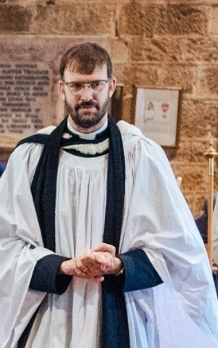

About us
Three parishes, one church family.
Who we are
The Benefice of Burwash, Burwash Weald and Etchingham brings together three parish churches in the High Weald of East Sussex:
- St Bartholomew's, Burwash · Services this week
- St Philip's, Burwash Weald · Services this week
- The Assumption of the Blessed Virgin & St Nicholas, Etchingham · Services this week
Each parish has its own church council, and we share one Rector and worship together often.
We are part of the Church of England, in the Diocese of Chichester. You can read about our vision for the benefice on our home page.
Our faith
We are parishes of the Church of England, part of the worldwide Anglican Communion. We worship one God, Father, Son and Holy Spirit, and we seek to follow Jesus Christ and to share his love with our villages.
The Church of England's teaching is grounded in the Holy Scriptures, and in the teaching of the early Church that agrees with them. It is summed up in the historic creeds, the Apostles' Creed and the Nicene Creed, which we say together in our services, as Christians have done for centuries.
The Church's doctrine is set out in particular in the Thirty-nine Articles of Religion, the Book of Common Prayer and the Ordinal. Every priest affirms this faith when they are ordained and again when they take up a new post. Our worship draws on both the Book of Common Prayer and Common Worship, with the sacraments of Baptism and Holy Communion at its heart.
More about what we believe on the Church of England website.
Our Rector

Revd Tom Pelham has been Rector of Burwash, Burwash Weald and Etchingham since 2021.
Music has always been a big part of Tom's life. He studied music at Bristol, specialising in composition, and was Director of Music in Bradford on Avon while working as a database developer. Sensing a call to ordination, he trained at Ripon College Cuddesdon from 2015. He was ordained deacon in 2018, served his curacy in Poole, and was ordained priest in 2019.
Tom is married to Sarah and they have two children. He is a governor of the church schools in Burwash and Etchingham. When he gets the chance he enjoys cycling, sailing, running and building models, and he plays cricket for Burwash.
Looking after our churches
Each parish has churchwardens and a Parochial Church Council (PCC), who are the church's trustees, and a Parish Safeguarding Officer. To contact any of them, please use our contact form and we'll pass your message on.
| Churchwardens | PCC secretary | Safeguarding officer | |
|---|---|---|---|
| St Bartholomew's, Burwash | Vacant: if you'd like to find out more, please speak to the Rector | Jan Macfarland | Mary Westhead |
| St Philip's, Burwash Weald | Jane Woodgate and Keith Lloyd | Clare Forster | Keith Lloyd |
| Etchingham | Caroline Moore and Annette Childs | Paulette Barton | Annette Childs |
Safeguarding phone numbers and the diocesan contact are on our safeguarding page.